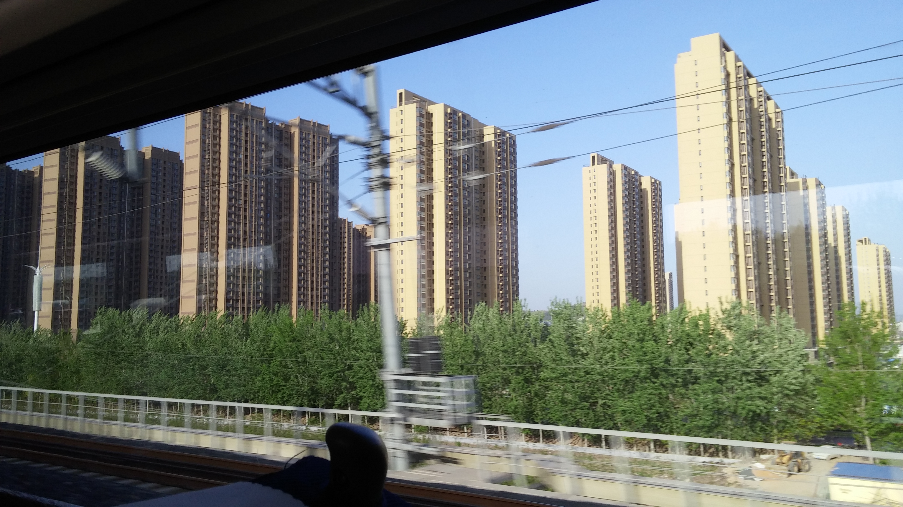
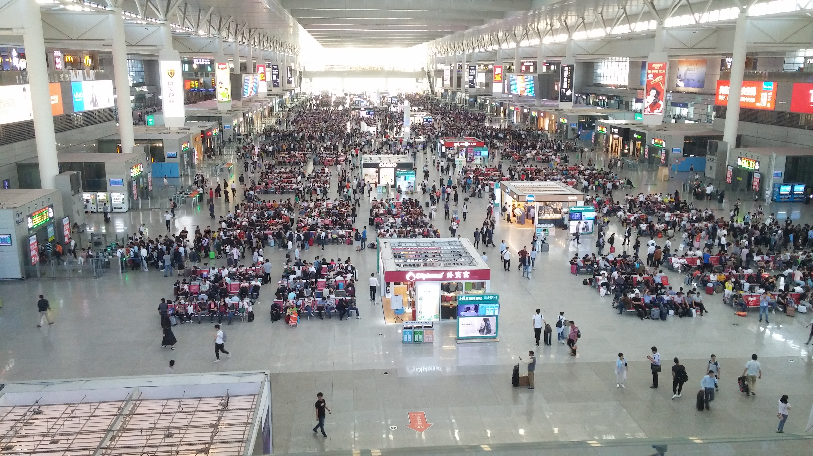

I had noticed the girl watching me, hoping I would do something interesting. The feeling was quite familiar, as white people are often watched in China. Most adults have enough discretion to avoid staring, but kids struggle to contain their curiosity. Outside of cosmopolitan Shanghai, I would see kids tugging on their parents’ sleeves with cries of “外国人！外国人！” (Foreigner! Foreigner!) Some brave souls would put their English lessons to use and shout “Hello!” or even “How are you?” I always tried to smile, wave, and reply in the language I was addressed. I knew I was being watched because I was a novelty, and I wanted to make a good impression. After three months in China, I had grown accustomed to this treatment.

White people are rare, please take a photo with my kid! ft. Matt and Graham
In this instance, I was trying to decide how uncomfortable I should feel. I was on a train from Shanghai to Beijing, a six-hour ride. I was riding alone, planning to meet some Purdue friends who were taking a different train. The girl looked about eight, and was sitting two rows behind me, and across the aisle to my left. Every twenty minutes or so, she would skip up and down the aisle of the train car before returning to bother her mother, who was holding a baby and trying to rest. The girl was looking for entertainment, and despite the initial promise of my being white, I was not providing her with any. Periodically she would stand just behind me in the aisle, and look over my shoulder. I was reading on my laptop, and had been for the duration of the trip. After she did this several times, I considered starting a conversation, but I did not.
* * * * * * * * * * * * * * * * * * * * * * * * * * * * * * * * * * * * * * * * * * * * * * * * * * * * * * * * * * * * * * * * * * * *
I was doing something interesting, although the girl was not aware of it. I was reading banned literature. In preparation for my trip to Beijing, I was reading The People’s Republic of Amnesia: Tiananmen Revisited, a book chronicling the history of the 1989 Tiananmen Square protests. The book was written by the Chinese-American author Louisa Lim for the 25th anniversary of the protests, detailing how the Party (the Chinese Communist Party, there are no others) has aggressively censored and suppressed discussion of this incident. Their censorship has been so effective that most young people in China don’t know anything about what happened, or even that anything notable happened at all.

Tiananmen Square, 2017
In 1989, a little over a decade after the death of Mao, protests broke out in central Beijing, led by university students seeking political reform. The protests grew, escalating through a series of spats between protesters and police. After a month, martial law was declared, but the roads leading into the square were blockaded by protesters and the army could not reach Tiananmen to enforce it. A schism emerged in the Party between those sympathetic to the protesters and the authoritarian hard-liners. Within two weeks of martial law, the hard-liners won, purging the pro-reform leaders from their roles across Party and military leadership.
On June 4, 1989, the army invaded downtown Beijing, rolling tanks and infantry into the city center to clear the square for good. Initial reports from the Chinese Red Cross and a Swiss diplomat estimated that about 2500-3000 people died in the incident, numbers that are hard to verify due to an effort to destroy all incriminating evidence. Communist Party representatives insist casualties were only about 10% of that total. The Party claims that the protesters were insincere, paid off by Western powers intent on weakening the Chinese government. This version of events meshes nicely with one of their favorite narratives: that the strength of the Party is the only thing stopping China from returning to the exploitation and economic colonization it experienced in the 1800s and early 1900s.
The book follows a series of people involved in the Tiananmen Square protests and invasion. A soldier who feels guilty about his role in the invasion, a student leader who now lives in exile, the mother of a young man killed during the incident, and a pro-reform party official who was stripped of power, jailed, and blacklisted all share one common experience: they have no outlet for discussing what happened. Their phones are tapped, they are followed whenever they leave the house, and they may be periodically jailed if they show any signs of activism. On sensitive anniversaries, they are placed under house arrest. After sharing their stories, the book describes how extreme police brutality was used to suppress similar protests that same week in other cities across China, specifically Chengdu. These events have been effectively wiped from the collective memory, with those old enough to remember reluctant to teach the younger generation.
The event was a near-death experience for the Party, and largely shapes its domestic policy to this day. Nearly 3000 deaths, the damage was self-inflicted, and many young people are not even aware of it. Lim showed 100 students at the top Beijing universities the iconic picture of the Tiananmen Tank Man, widely recognized in the West despite our Euro-centric history lessons. Only 15 of the 100 recognized the image, and those that recognized it did not want to discuss it.

Barriers around Tiananmen Square. The Square is the empty plaza across the street. There are rows of barricades on both sides of the street, as well as in the middle. Two layers of security are present at checkpoints around all entrances. Tiananmen is NOT a gathering place anymore, a rule enforced by hundreds of guards and soldiers marching around on patrol. Guards and soldiers clear everyone off the square from sunset to sunrise. There are flag raising and lowering ceremonies everyday at sunrise and sunset. Flag guards march out of the Forbidden City through the Tiananmen Gate, raise/lower the flag while the National Anthem plays, then march back into the Forbidden City.
The average native Chinese speaker knows and uses fewer words in everyday conversation than a native English speaker. Due to the difficulty of learning characters, fewer words are used, but each word tends to have more different meanings and uses than in English. The Chinese word for “to see” is “看” (pronounced kan). The same word is also used to mean “to read.” A sentence like “I saw the book” is written and pronounced identically to “I read the book”. The context is critical. To aid interpretation, a verb is often followed immediately by another verb or adjective. The verb “ 懂 ” (dong, to understand) can be used this way. In Chinese class, if the teacher plays a soundtrack and wants to know if the class got it, they could say a sentence that translates word-for-word to “you hear-understand?” The possible replies can be easily constructed by placing a negator in front of whatever word you want to negate. “We hear no understand” or “we no hear” or “we hear-understand.” The simpler sentence structures and smaller working vocabulary combined with a cultural aversion to explicit criticism result in a communication style that is more subtle and nuanced than what most native English speakers are accustomed to.
* * * * * * * * * * * * * * * * * * * * * * * * * * * * * * * * * * * * * * * * * * * * * * * * * * * * * * * * * * * * * * * * * * * *
“水果？可乐？” Every hour I was startled by an attendant passing through the aisle selling fruit and soda. I sat on the train reading about the extent of the brutality of police and security forces, pondering the awesome and terrifying power of the Chinese state. Reading about the aggressive censorship of informed and outspoken Chinese citizens was making me paranoid. Part of me was expecting a guard to come and confiscate my laptop. A rational assessment was that no one near me could read English at that level, and since I was keeping to myself, the government was happy to keep collecting my tourism money. Like most groups, the Chinese tend to respond defensively and suspiciously to criticism from outsiders. As a foreigner, I didn’t pose much of a threat. This is the same reason the author was allowed to talk to all the people in the book: Party leadership is not very concerned with what is published abroad. They simply try to control the narrative inside China, and trust that their citizens won’t believe criticism they hear second hand from foreigners.
The train glided across the countryside at 180 mph, and the cabin was very tranquil. Many people slept. The man next to me was watching a TV drama. I couldn’t understand enough to bother paying attention. Early in the journey he took a cursory look at my laptop, and seemed to have the same reaction to my screen that I had to his. While reading about the widespread amnesia and indifference to what I saw as a critical moment in Chinese national history, I wondered who on the train knew of what happened in 1989, what they knew, and how they rationalized it. The train carried mostly younger businesspeople, a demographic most likely to have bought in to the government narrative of success: capitalize on economic growth, and steer clear of testy politics that could jeopardize your economic standing. What happened at Tiananmen was not important to them. It did not benefit them to dwell on past events. Such knowledge gave them so little benefit, and carried so much risk. What would they do with it? Who would they tell, and how would it change anything? Would they get blacklisted if they spoke out? The past 25 years had brought so many new opportunities, and they were too busy chasing them. With or without justice, their world moved on.

Left: The view from a train. Right: Mountains around Beijing
In that moment, reading an emotionally draining narrative aboard a magnificent high-speed train, an embodiment of the economic development that the Communist Party feels justifies all previous transgressions, I felt more alone than at any other time during the semester. I was the only white person on a train car full of Chinese, separated by a double barrier of language and world view. Even if I had the language skills to communicate what I was experiencing, the message would have been so foreign that most other passengers would have dismissed it as more unfair criticism from someone who didn’t understand. I was isolated, surrounded by an abiding silence.
“Hello.” Near the end of the train ride, the little girl behind me had mustered the courage to voice a timid greeting. She was standing in the aisle next to me. My head was spinning, trying to process what I was reading, and I decided to take a break. I responded, “Hello, how are you?”
“I’m very good. What are you reading?” she asked.
“A book.” My limited vocabulary provided the first barrier to our conversation.
“What book?”
I thought for a moment, unable to find a word meaning ‘history,’ and replied, “A book about China. I am studying Chinese. Do you study English?”
The girl nodded, paused for a second, then returned to her seat. Fifteen minutes later, she was back. “Your book is long.”
“It is. I think it is a very good book.”
Her mother had gained interest in our conversation. “Can you read that?” she asked.
“I cannot read it,” the girl replied. The mother gave a short dismissive chuckle and returned her attention to the baby, disappointed but not surprised by her daughter’s English skills.
Except what I heard was “I can see, but I do not understand.” I smiled mournfully and sighed, overcome by my limitations, and the complexity of the situation. Her statement was profoundly correct, in a way she could not grasp, and I could not tell her. Our conversation had hit the second barrier. My world view was incomprehensible to her. She watched me quizzically as I searched for the right response to her simple statement. Everything I could say felt woefully inadequate.
“Keep studying English, perhaps when you are older you will understand.”
But what I also said was “perhaps when you are older you will be able to read it.” Patronizing advice she could have easily gotten from her parents, instead from a poorly articulated foreigner. She walked away, and did not approach me again.
I finished the book as the train approached the destination. I packed up my bags and headed onto the platform, checking my phone to see if my classmates had arrived. I only had a couple of days to visit Beijing. There was nothing else I could do. My life had to move on.

Hongqiao Train Station, Shanghai